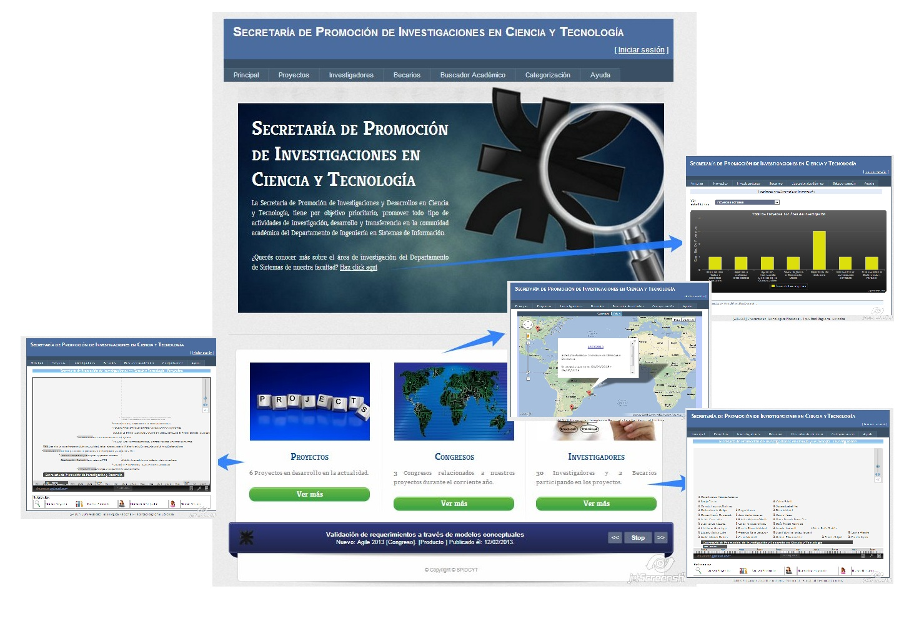

La página de bienvenida informa cuestiones relevantes de la secretaría, como su objetivo, noticias y estadísticas.
En la parte superior muestra el menú habilitado para todos los usuarios sin autenticación.
Permite acceso a visitantes o usuarios anónimos
La misma permite la navegación a otras sub-páginas de información.

Created with the Personal Edition of HelpNDoc: Create HTML Help, DOC, PDF and print manuals from 1 single source